WGCNA_2
Karissa Barthelson
2024-03-07
Last updated: 2024-03-08
Checks: 6 1
Knit directory: MPS III iron
supplementation/
This reproducible R Markdown analysis was created with workflowr (version 1.7.1). The Checks tab describes the reproducibility checks that were applied when the results were created. The Past versions tab lists the development history.
The R Markdown is untracked by Git. To know which version of the R
Markdown file created these results, you’ll want to first commit it to
the Git repo. If you’re still working on the analysis, you can ignore
this warning. When you’re finished, you can run
wflow_publish to commit the R Markdown file and build the
HTML.
Great job! The global environment was empty. Objects defined in the global environment can affect the analysis in your R Markdown file in unknown ways. For reproduciblity it’s best to always run the code in an empty environment.
The command set.seed(20240223) was run prior to running
the code in the R Markdown file. Setting a seed ensures that any results
that rely on randomness, e.g. subsampling or permutations, are
reproducible.
Great job! Recording the operating system, R version, and package versions is critical for reproducibility.
Nice! There were no cached chunks for this analysis, so you can be confident that you successfully produced the results during this run.
Great job! Using relative paths to the files within your workflowr project makes it easier to run your code on other machines.
Great! You are using Git for version control. Tracking code development and connecting the code version to the results is critical for reproducibility.
The results in this page were generated with repository version bbc3ea0. See the Past versions tab to see a history of the changes made to the R Markdown and HTML files.
Note that you need to be careful to ensure that all relevant files for
the analysis have been committed to Git prior to generating the results
(you can use wflow_publish or
wflow_git_commit). workflowr only checks the R Markdown
file, but you know if there are other scripts or data files that it
depends on. Below is the status of the Git repository when the results
were generated:
Ignored files:
Ignored: .DS_Store
Ignored: .Rhistory
Ignored: .Rproj.user/
Ignored: analysis/figure/
Ignored: data/.DS_Store
Ignored: data/RNAseq/.DS_Store
Ignored: data/RNAseq/fastqc_align/.DS_Store
Ignored: data/RNAseq/fastqc_dedup/.DS_Store
Ignored: data/RNAseq/fastqc_raw/.DS_Store
Ignored: data/RNAseq/fastqc_trim/.DS_Store
Ignored: data/RNAseq/starlog/.DS_Store
Ignored: data/ymaze/.DS_Store
Ignored: data/ymaze/metabolomics_fam/.DS_Store
Ignored: data/ymaze/metabolomics_fam/raw_data/.DS_Store
Ignored: data/ymaze/metabolomics_fam/tracking_videos/
Ignored: data/ymaze/ymaze_FeCit_FullExp/.DS_Store
Ignored: data/ymaze/ymaze_FeCit_FullExp/videos/
Untracked files:
Untracked: analysis/WGCNA_2.rmd
Unstaged changes:
Modified: analysis/WGCNA.rmd
Modified: analysis/_site.yml
Note that any generated files, e.g. HTML, png, CSS, etc., are not included in this status report because it is ok for generated content to have uncommitted changes.
There are no past versions. Publish this analysis with
wflow_publish() to start tracking its development.
library(tidyverse)
library(magrittr)
library(readxl)
# vis
library(pander)
library(kableExtra)
library(UpSetR)
library(scales)
library(pheatmap)
library(ggpubr)
library(ggrepel)
library(ggfortify)
library(ggforce)
library(RColorBrewer)
library(colorspace)
library(igraph)
# analysis
library(WGCNA)
library(topGO)
library(org.Dr.eg.db)
library(clusterProfiler)
library(msigdbr)
library(matrixStats)
theme_set(theme_classic())
options(stringsAsFactors = FALSE)
allowWGCNAThreads() Allowing multi-threading with up to 12 threads.Introduction
In the previous WGCNA analysis, I analysed all fish in the experiment together. This was overall successful, and I found modules of co-expressed genes, which were over-represented with gene ontologies meaning they have biological relevance. Some modules were significantly correlated with genotype and treatment as well. However, it was difficult to perform linear modelling when I wanted to look at module eigengenes which are associated with genotype and treatment across the sexes. I found a paper by Sutherland et al. which performed WGCNA analysis on Brook Char (another type of fish) across sexes. They built co-expression networks for each sex, then looked for module preservation. I will try this approach here.
setup
Read in data
The DGE object was read in, which contains the gene
expression and sample info. The logCPM values for each gene were also
read in which are already filtered for lowly expressed genes, are TMM
& CQN normalised. I then will seperate the DGE object into two of
them by sex.
# read in data
x <- readRDS("data/RNAseq/R-objects/x_dgeObject_withCQNoffset.rds")
# update the group factor for this analysis
x$samples %<>%
mutate(group = paste0(genotype, "_", treatment2) %>%
as.factor())
# CQN adjusted logCPM
logCPM <- readRDS("data/RNAseq/R-objects/logCPM_CQN")# plot the TMM/CQN normalised data
logCPM %>%
as.data.frame() %>%
rownames_to_column("gene_id") %>%
pivot_longer(
names_to = "sample",
values_to = "logCPM",
colnames(x)
) %>%
left_join(x$samples) %>%
ggplot(
aes(x = sample, y = logCPM,
fill = genotype),
size = 1
) +
geom_boxplot()+
facet_wrap(~sex+treatment, scales = "free_x",
nrow = 1) +
theme(
axis.text.x = element_text(angle = -45, hjust = 0))LogCPM values after TMM and CQN normalisation. All samples appear to have similar distributions
# make vectors for subsetting
male.fish.ids <- x$samples %>%
dplyr::filter(sex == "male") %>%
.$fish_id
female.fish.ids <- x$samples %>%
dplyr::filter(sex == "female") %>%
.$fish_id
# subset DGEs
x.males <- x[,male.fish.ids]
x.females <- x[,female.fish.ids]
# subset logCPMs
logCPM.male <- logCPM[,male.fish.ids]
logCPM.female <- logCPM[,female.fish.ids]prepare for WGCNA
Genes that do not vary across samples are not informative in network analysis, and will increase the noise. So I will only retain the top 75% most variable genes in the datasets. Assessment of the distribution of the gene expression values before and after filtering shows no issues in any artefacts being generated.
# Retain genes with sufficiently high variation in expression across all samples.
# Here we define sufficiently high variation as having a standard deviation above the 25th quantile (so not in bottom 25%).
variableGenes.female <- rowSds(logCPM.female) > quantile(rowSds(logCPM.female), 0.25)
variableGenes.male <- rowSds(logCPM.male) > quantile(rowSds(logCPM.male), 0.25)# write a function to plot these out
plot.density.filtering = function(dge,
logCPM,
variableGenesVector,
ggtitle) {
logCPM %>%
as.data.frame() %>%
rownames_to_column("gene_id") %>%
pivot_longer(
names_to = "fish_id",
values_to = "logCPM",
colnames(dge)
) %>%
left_join(dge$samples) %>%
ggplot(aes(x = logCPM, colour = group)) +
geom_density() +
ggtitle(ggtitle)
}## females
ggarrange(
plot.density.filtering(
dge = x.females, logCPM = logCPM.female, ggtitle = "before filtering"),
plot.density.filtering(
dge = x.females,
logCPM = logCPM.female %>% extract(variableGenes.female,),
ggtitle = "After filtering"),
common.legend = TRUE
)Females
ggarrange(
plot.density.filtering(
dge = x.males, logCPM = logCPM.male, ggtitle = "before filtering"),
plot.density.filtering(
dge = x.males,
logCPM = logCPM.male %>% extract(variableGenes.male,),
ggtitle = "After filtering"),
common.legend = TRUE
) Males
# peformed the filtering
logCPM.female.filtered <- logCPM.female %>% extract(variableGenes.female,)
logCPM.male.filtered <- logCPM.male %>% extract(variableGenes.male,)the table below shows the number of genes retained after filtering. While the numbers of genes are the same in each sex, they are not necessarily the same genes
tibble(
`filtered?` = c(
"unfiltered", "unfiltered",
"filtered", "filtered"
),
sex = c("female", "male", "female", "male"),
n_genes = c(
dim(logCPM.female)[1],
dim(logCPM.male)[1],
dim(logCPM.female.filtered)[1],
dim(logCPM.male.filtered)[1]
)
) %>%
pander()| filtered? | sex | n_genes |
|---|---|---|
| unfiltered | female | 18101 |
| unfiltered | male | 18101 |
| filtered | female | 13575 |
| filtered | male | 13575 |
The WGCNA pipeline is expecting an input matrix of RNAseq data
(counts). Usually we need to rotate (transpose) the input data so
rows = samples and columns = gene counts. So
this is done here.
# transpose the data
input_mat.females = t(logCPM.female.filtered)
input_mat.males = t(logCPM.male.filtered)check sample clustering
Here we use the gene expression patterns after normalisation to build
sample dendrograms (sample tree), and check how the traits
(e.g. metadata) related to the sample dendrogram.
Traits uses a design matrix as described in the previous DE genes analysis.s
# Apply hierarchial clustering to the gene exp data.
sampleTree.females <- hclust(dist(input_mat.females), method = "complete")
sampleTree.males <- hclust(dist(input_mat.males), method = "complete")
# Using the design matrix, which contains information of samples' sex and genotype
traits.females <-
model.matrix(~(genotype+treatment)^2, x.females$samples) %>%
as.data.frame
traits.males <-
model.matrix(~(genotype+treatment)^2, x.males$samples) %>%
as.data.frame
# Assign each group in design matrix to a colour.
traitColors.females <-
numbers2colors(traits.females,
signed = FALSE,
colors = c("#ffffff", "#73626E"))
traitColors.males <-
numbers2colors(traits.males,
signed = FALSE,
colors = c("#ffffff", "#73626E"))
# Plot dendrogram of clustered samples with the design matrix underneath.
plotDendroAndColors(
sampleTree.females,
traitColors.females,
groupLabels = names(traits.females),
main = "Females \nSample dendrogram and trait heatmap")No obvious outliers are observed here
plotDendroAndColors(
sampleTree.males,
colors = traitColors.males,
groupLabels = names(traits.males),
main = "Males\nSample dendrogram and trait heatmap")No obvious outliers are observed here
Network construction
Choice of soft-thresholding power
Constructing a weighted gene network requires a soft-thresholding power β, which will be chosen based on the scale-free topology criterion described by Zhang & Horvath (2005). Here we perform the analysis of network topology for choosing a proper soft-threshold power.The following plots show the sufficiently high scale-free topology index (R2). Zhang and Hovarth stated in their framework ref that “we use the first parameter value where saturation is reached as long as it is above 0.8”. Also, the mean connectivity should be not 0, otherwise nothing will be connected.
Also, I will need to choose between a signed or unsigned network. A good explanation of signed vs unsigned networks is described here. However, essentially, in an unsigned network, genes are considered connected regardless of whether the correlation is positive or negative. Then in signed networks, the direction matters. I will prepare a signed network, as I think directionality is important.
# prepare a vector with a series of candicdate poweres
powers = c(c(1:10), seq(from = 12, to = 20, by = 2))
# signed network analysis of scale-free topology
sft.females <-
pickSoftThreshold(
input_mat.females, # Input data
powerVector = powers,
networkType = "signed",
dataIsExpr = TRUE,
verbose = 5
)pickSoftThreshold: will use block size 3295.
pickSoftThreshold: calculating connectivity for given powers...
..working on genes 1 through 3295 of 13575
..working on genes 3296 through 6590 of 13575
..working on genes 6591 through 9885 of 13575
..working on genes 9886 through 13180 of 13575
..working on genes 13181 through 13575 of 13575
Power SFT.R.sq slope truncated.R.sq mean.k. median.k. max.k.
1 1 3.61e-06 0.084 0.846 6810.0 6820.0 7130
2 2 1.91e-01 -10.300 0.907 3710.0 3680.0 4280
3 3 2.58e-01 -5.910 0.910 2160.0 2130.0 2820
4 4 3.23e-01 -4.260 0.922 1330.0 1290.0 1980
5 5 4.13e-01 -3.590 0.936 853.0 820.0 1450
6 6 5.00e-01 -3.110 0.951 569.0 538.0 1100
7 7 5.67e-01 -2.800 0.959 391.0 363.0 858
8 8 6.15e-01 -2.600 0.964 277.0 252.0 683
9 9 6.63e-01 -2.450 0.969 200.0 178.0 553
10 10 7.12e-01 -2.330 0.978 148.0 128.0 454
11 12 7.66e-01 -2.350 0.977 85.4 69.7 324
12 14 8.05e-01 -2.310 0.983 52.3 39.9 240
13 16 8.12e-01 -2.330 0.977 33.6 23.9 183
14 18 8.27e-01 -2.290 0.978 22.5 14.9 142
15 20 8.48e-01 -2.240 0.985 15.6 9.5 113sft.males <-
pickSoftThreshold(
input_mat.males, # Input data
powerVector = powers,
networkType = "signed",
dataIsExpr = TRUE,
verbose = 5
)pickSoftThreshold: will use block size 3295.
pickSoftThreshold: calculating connectivity for given powers...
..working on genes 1 through 3295 of 13575
..working on genes 3296 through 6590 of 13575
..working on genes 6591 through 9885 of 13575
..working on genes 9886 through 13180 of 13575
..working on genes 13181 through 13575 of 13575
Power SFT.R.sq slope truncated.R.sq mean.k. median.k. max.k.
1 1 0.0779 4.75 0.750 6850.0 6890.0 7400
2 2 0.2010 -6.06 0.865 3790.0 3780.0 4590
3 3 0.2620 -4.85 0.904 2250.0 2230.0 3080
4 4 0.2880 -3.45 0.918 1420.0 1400.0 2180
5 5 0.3320 -2.55 0.942 931.0 919.0 1590
6 6 0.3610 -1.96 0.956 636.0 622.0 1190
7 7 0.4090 -1.79 0.948 448.0 432.0 933
8 8 0.4680 -1.79 0.930 324.0 307.0 755
9 9 0.5420 -1.75 0.943 240.0 223.0 628
10 10 0.6090 -1.91 0.947 182.0 165.0 547
11 12 0.7240 -2.04 0.969 110.0 93.6 426
12 14 0.8110 -2.06 0.986 70.0 55.7 342
13 16 0.8510 -2.09 0.984 46.8 34.4 284
14 18 0.8800 -2.11 0.986 32.5 21.9 240
15 20 0.9020 -2.09 0.986 23.4 14.3 206# plot out the results
# first define the function.
plot.powers = function(sft) {
ggarrange(
sft$fitIndices %>%
ggplot(
aes(x = Power, y = -sign(slope) * SFT.R.sq)
) +
geom_label(
aes(label = Power)
) +
geom_hline(
yintercept = 0.8,
colour = "red") +
annotate(
geom = "text",
label = "beta = 0.8",
colour = "red",
x = 4,
y = 0.75
) +
labs(
x = "Soft Threshold (power)",
y = "Scale Free Topology Model Fit, signed R^2",
title = "Scale independence"
),
sft$fitIndices %>%
ggplot(
aes(x = Power, y = mean.k.)
) +
geom_label(
aes(label = Power)
) +
geom_hline(
yintercept = 0,
colour = "red") +
annotate(
geom = "text",
label = "k = 0",
colour = "red",
x = 3,
y = 190
) +
labs(
x = "Soft Threshold (power)",
y = "Mean connectivity (k)",
title = "Mean connectivity"
)
)
}
plot.powers(sft = sft.males) 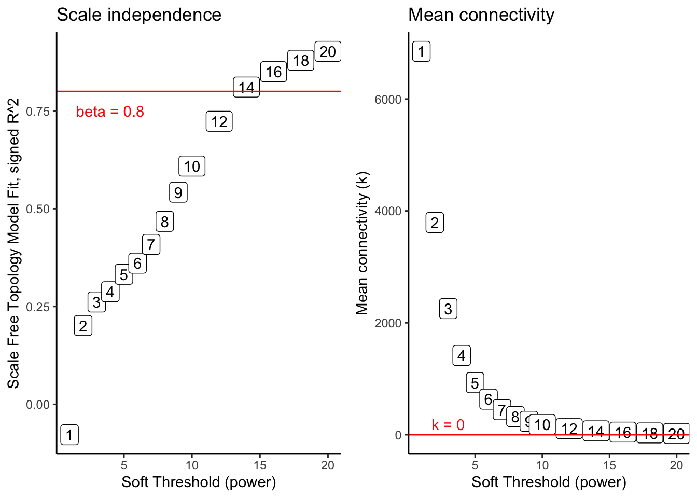
plot.powers(sft = sft.females)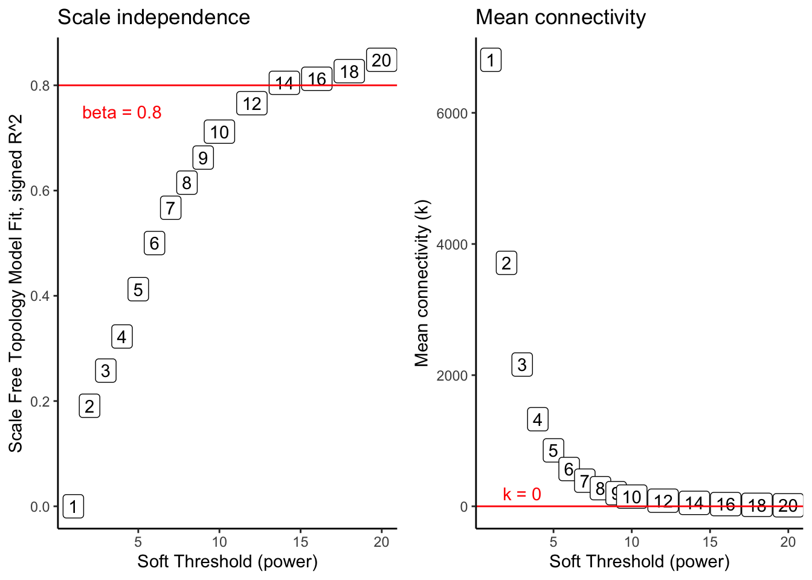
define soft powers
softpower.signed = 16From the 2 graphs, I will assign the soft powers for the signed networks as 16. This is the first value where the graphs plateau which is more than 0.8.
Co-expression adjacency
We now calculate the adjacency matrix, using the soft thresholding powers just described. This essentially takes the gene expression data and calculates the pairwise similarity between genes (Euclidean distance). This similarity measure is then transformed into an adjacency matrix by using the power function. (i.e. a = |s^β|)
adjacency.signed.females <-
adjacency(
input_mat.females,
type = "signed",
power = softpower.signed
)
adjacency.signed.males <-
adjacency(
input_mat.males,
type = "signed",
power = softpower.signed
)Topological Overlap Matrix (TOM)
To minimize effects of noise and spurious associations, we transform the adjacency into Topological Overlap Matrix, and calculate the corresponding dissimilarity.
# Turn adjacency into topological overlap
TOM.signed.males <- TOMsimilarity(adjacency.signed.males)..connectivity..
..matrix multiplication (system BLAS)..
..normalization..
..done.TOM.signed.females <- TOMsimilarity(adjacency.signed.females)..connectivity..
..matrix multiplication (system BLAS)..
..normalization..
..done.dissTOM.signed.males = 1-TOM.signed.males
dissTOM.signed.females = 1-TOM.signed.femalesPlotting the dissimilarity of the genes in the network reveals a lot of the genes with TOM between 0.9 and 1. This means that the majority of the genes are very connected to each other.
# We now use hierarchial clustering to produce a hierarchial clustering tree (dendrogram) of genes using TOM
geneTree.signed.males <-
hclust(as.dist(dissTOM.signed.males), method = "average")
geneTree.signed.females <-
hclust(as.dist(dissTOM.signed.females), method = "average")
par(mfrow=c(2,1))
# Plot the dendrogram
plot(geneTree.signed.males,
xlab = "", ylab = "",
main = "Gene clustering on TOM-based dissimilarity\nMale network",
labels = FALSE, hang = 0.04)
plot(geneTree.signed.females,
xlab = "", ylab = "",
main = "Female network",
labels = FALSE, hang = 0.04)
Define modules
The next step is to define the modules or clusters of genes. This is done using dynamic tree cut method.
# The authors of WGCNA suggest this minimum module size to give "relatively large modules"
minModuleSize = 30
# Module identification using dynamic tree cut. The [arameters are set according to what the WGCNA tutorial suggests.
dynamicMods.signed.males <-
cutreeDynamic(dendro = geneTree.signed.males,
distM = dissTOM.signed.males,
deepSplit = 2,
pamRespectsDendro = FALSE,
minClusterSize = minModuleSize) ..cutHeight not given, setting it to 0.996 ===> 99% of the (truncated) height range in dendro.
..done.dynamicMods.signed.females <-
cutreeDynamic(dendro = geneTree.signed.females,
distM = dissTOM.signed.females,
deepSplit = 2,
pamRespectsDendro = FALSE,
minClusterSize = minModuleSize) ..cutHeight not given, setting it to 0.997 ===> 99% of the (truncated) height range in dendro.
..done.# give the modules a name based off baseR colours.
dynamicColors.signed.females <- labels2colors(dynamicMods.signed.females)
dynamicColors.signed.males <- labels2colors(dynamicMods.signed.males)raw modules
plot_n_genes_perModule = function(dynamicColors, title) {
dynamicColors %>%
as.data.frame() %>%
set_colnames("mod") %>%
group_by(mod) %>%
mutate(total = n()) %>%
ggplot(aes(x = reorder(mod, -total), fill = mod)) +
geom_bar(colour= "black") +
theme(
axis.text.x = element_text(
angle = -90, hjust = 0, vjust = 0.4
),
plot.title = element_text(hjust = 0.5, face = "bold"),
legend.position = "none"
) +
labs(
title = title,
x = "Module",
y = "Number of genes"
) +
scale_fill_identity() # fill the actual colours
}
plot_n_genes_perModule(dynamicColors = dynamicColors.signed.females,
title = "Female modules before merging")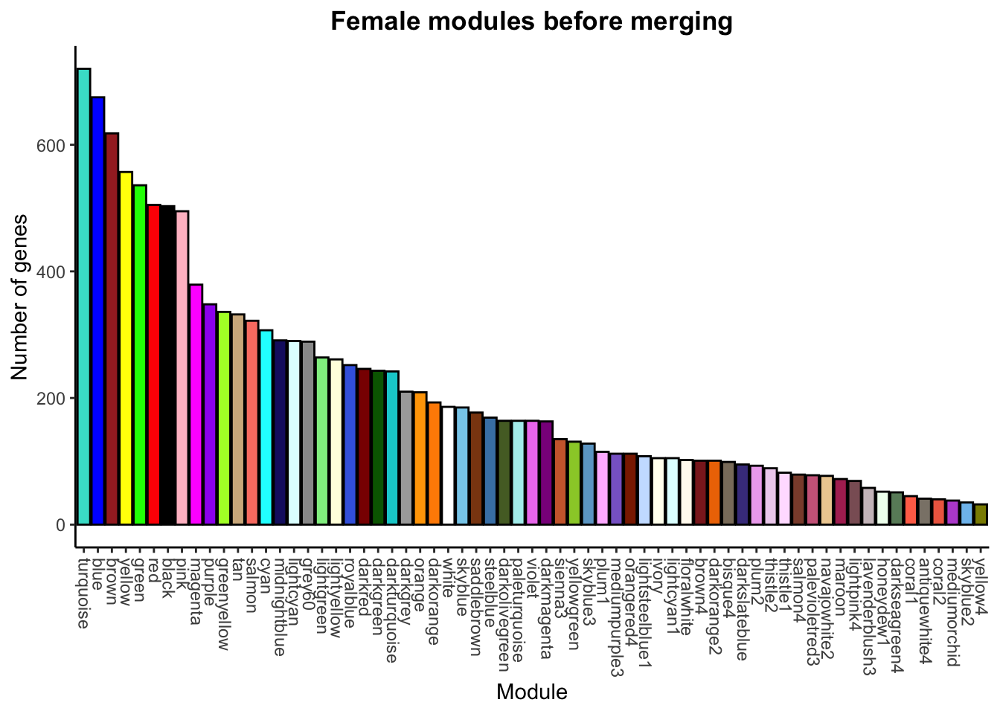
plot_n_genes_perModule(dynamicColors = dynamicColors.signed.males,
title = "Male modules before merging")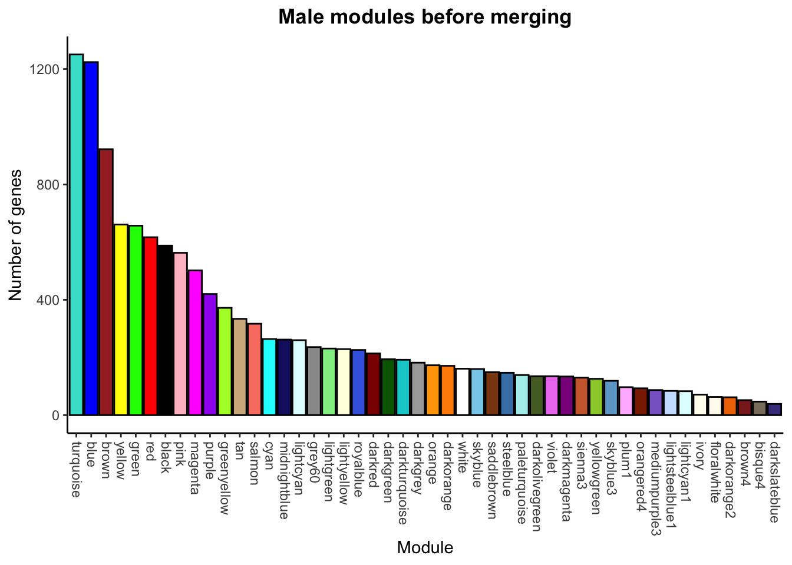
The next plot shows the clustering dendrogram of genes, with dissimilarity based on topological overlap, together with assigned merged module colors. There are a lot of modules here which are all over the dendrogram. The plots i’ve seen previously (i.e. here) often show at least some blocks of module colours on the dendrogram. Although this is not always the case (see here), as this can be a limitation of visualizing on a dendrogram.
plotDendroAndColors(geneTree.signed.males,
dynamicColors.signed.males,
"Dynamic Tree Cut",
dendroLabels = FALSE, hang = 0.03,
addGuide = TRUE, guideHang = 0.05,
main = "Gene dendrogram and module colors\nsigned network"
)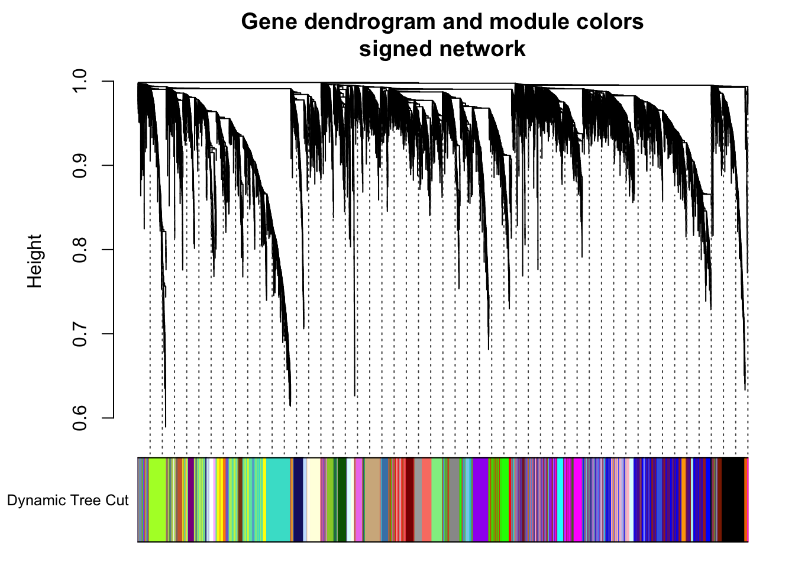
plotDendroAndColors(geneTree.signed.females,
dynamicColors.signed.females,
"Dynamic Tree Cut",
dendroLabels = FALSE, hang = 0.03,
addGuide = TRUE, guideHang = 0.05,
main = "Gene dendrogram and module colors\nsigned network"
)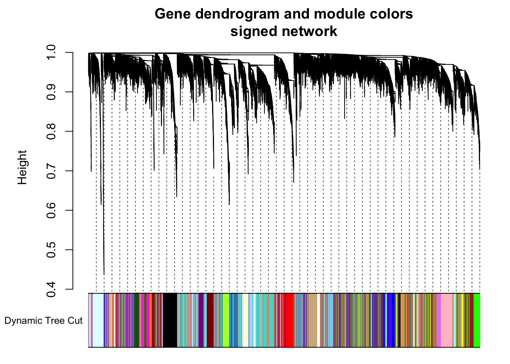
merge similar modules
The Dynamic Tree Cut may identify modules whose expression profiles are very similar. It may be beneficial to merge such modules since their genes are highly co-expressed. To quantify co-expression similarity of entire modules, we calculate their eigengenes and cluster them on their correlation.
# calculate the eigengenes of each module
MEList.signed.females <-
moduleEigengenes(
expr = logCPM.female.filtered %>% t(),
colors = dynamicColors.signed.females,
excludeGrey = TRUE
)
MEList.signed.males <-
moduleEigengenes(
expr = logCPM.male.filtered %>% t(),
colors = dynamicColors.signed.males,
excludeGrey = TRUE
)
# Calculate dissimilarity of module eigengenes
MEDiss.signed.females = 1-cor(MEList.signed.females$eigengenes)
MEDiss.signed.males = 1-cor(MEList.signed.males$eigengenes)
# Cluster module eigengenes
METree.signed.females = hclust(as.dist(MEDiss.signed.females), method = "average")
METree.signed.males = hclust(as.dist(MEDiss.signed.males), method = "average")
# Plot the result
sizeGrWindow(7, 6)
plot(METree.signed.females,
main = "Clustering of module eigengenes\n Females",
xlab = "", sub = "")
plot(METree.signed.males,
main = "Clustering of module eigengenes\n Males",
xlab = "", sub = "")
# defnine a module threshold as the same if it has more than 25% dissimilarity (i.e.. 75% similar)
MEDissThres = 0.25
# Plot the cut line into the dendrogram
abline(h=MEDissThres, col = "red") There appear to be plenty of modules which show similarity. Here we define the threshold for module merging as a height < 0.25 (as performed by authors of WGCNA). This corresponds to correlation of 0.75, to merge.
# Call an automatic merging function
merge.signed.females <- mergeCloseModules(
t(logCPM.female.filtered),
dynamicColors.signed.females,
cutHeight = MEDissThres,
verbose = 3) mergeCloseModules: Merging modules whose distance is less than 0.25
multiSetMEs: Calculating module MEs.
Working on set 1 ...
moduleEigengenes: Calculating 65 module eigengenes in given set.
multiSetMEs: Calculating module MEs.
Working on set 1 ...
moduleEigengenes: Calculating 42 module eigengenes in given set.
multiSetMEs: Calculating module MEs.
Working on set 1 ...
moduleEigengenes: Calculating 38 module eigengenes in given set.
multiSetMEs: Calculating module MEs.
Working on set 1 ...
moduleEigengenes: Calculating 37 module eigengenes in given set.
Calculating new MEs...
multiSetMEs: Calculating module MEs.
Working on set 1 ...
moduleEigengenes: Calculating 37 module eigengenes in given set.merge.signed.males <- mergeCloseModules(
t(logCPM.male.filtered),
dynamicColors.signed.males,
cutHeight = MEDissThres,
verbose = 3) mergeCloseModules: Merging modules whose distance is less than 0.25
multiSetMEs: Calculating module MEs.
Working on set 1 ...
moduleEigengenes: Calculating 48 module eigengenes in given set.
multiSetMEs: Calculating module MEs.
Working on set 1 ...
moduleEigengenes: Calculating 30 module eigengenes in given set.
multiSetMEs: Calculating module MEs.
Working on set 1 ...
moduleEigengenes: Calculating 29 module eigengenes in given set.
Calculating new MEs...
multiSetMEs: Calculating module MEs.
Working on set 1 ...
moduleEigengenes: Calculating 29 module eigengenes in given set.# The merged module colors
mergedColors.signed.males = merge.signed.males$colors
mergedColors.signed.females = merge.signed.females$colors
# Table of number of modules after merging
plot_n_genes_perModule(dynamicColors = mergedColors.signed.males,
title = "Males")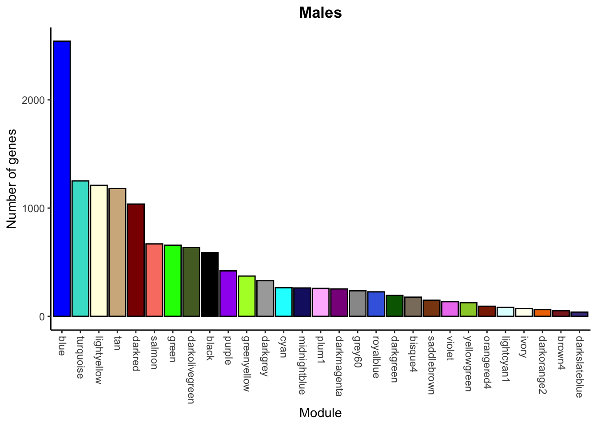
plot_n_genes_perModule(dynamicColors = mergedColors.signed.females,
title = "females")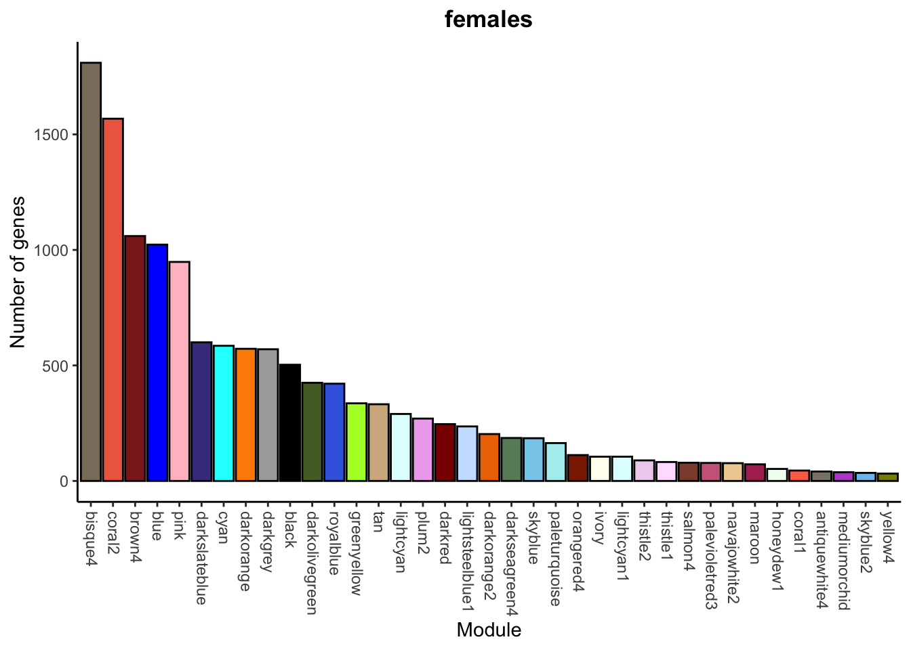
# Cluster module eigengenes
mergedMETree.signed.females = hclust(as.dist(MEDiss.signed.females), method = "average")
mergedMETree.signed.males = hclust(as.dist(MEDiss.signed.males), method = "average")gene tree after merging similar modules
sizeGrWindow(12, 9)
plotDendroAndColors(
geneTree.signed.females,
cbind(dynamicColors.signed.females, mergedColors.signed.females),
c("Dynamic Tree Cut", "Merged dynamic"),
dendroLabels = FALSE, hang = 0.03,
addGuide = TRUE, guideHang = 0.05
)plotDendroAndColors(
geneTree.signed.males,
cbind(dynamicColors.signed.males, mergedColors.signed.males),
c("Dynamic Tree Cut", "Merged dynamic"),
dendroLabels = FALSE, hang = 0.03,
addGuide = TRUE, guideHang = 0.05
)male brains
enrichment analysis of modules
I next will perform GO enrichment analysis on the merged modules to
see if they have any biological meaning. I will do this using GO terms,
as these have very specific or broad meaning. Since I am having trouble
using the inbuilt functions in WGCNA, I will use
clusterprofiler which allows me to perform a Fishers exact
test for over representation.
# Make a list with the gene expression by module
colour.names.signed.males <- mergedColors.signed.males %>%
unique
colour.names.signed.females <- mergedColors.signed.females %>%
unique
genesInModuleList.signed.males <-
colour.names.signed.males %>%
sapply(function(x) {
logCPM.male.filtered[mergedColors.signed.males==x,] %>%
rownames
}, simplify = F)
genesInModuleList.signed.females <-
colour.names.signed.females %>%
sapply(function(x) {
logCPM.female.filtered[mergedColors.signed.females==x,] %>%
rownames
}, simplify = F)# perform the enrichment test
merged.moduls.male.signed.enrichment.res <-
genesInModuleList.signed.males %>%
sapply(function(y) {
enrichGO(
gene = y,
universe = rownames(logCPM.male.filtered),
OrgDb = org.Dr.eg.db,
keyType = "ENSEMBL",
ont = "ALL",
pAdjustMethod = "BH",
pvalueCutoff = 0.01,
qvalueCutoff = 0.05,
readable = TRUE)
}, simplify = F)
merged.moduls.female.signed.enrichment.res <-
genesInModuleList.signed.females %>%
sapply(function(y) {
enrichGO(
gene = y,
universe = rownames(logCPM.female.filtered),
OrgDb = org.Dr.eg.db,
keyType = "ENSEMBL",
ont = "ALL",
pAdjustMethod = "BH",
pvalueCutoff = 0.01,
qvalueCutoff = 0.05,
readable = TRUE)
}, simplify = F)# prepare a list with all the resultsin tibble format for ease of use.
merged.modules.signed.enrichment.tables <-
list(
females = merged.moduls.female.signed.enrichment.res %>%
lapply(function(x) {
x %>%
as_tibble
}) %>%
imap(~ .x %>% mutate(module = .y)), # add mod name from list element name
males = merged.moduls.male.signed.enrichment.res %>%
lapply(function(x) {
x %>%
as_tibble
}) %>%
imap(~ .x %>% mutate(module = .y))
)Out of the 37 modules detected in the female modules, 14 do not have any GO terms significantly over-represented.
tibble(module = unique(mergedColors.signed.females)) %>%
left_join(merged.modules.signed.enrichment.tables$females %>% bind_rows()) %>%
ggplot(aes(y = module, x = -log10(p.adjust))) +
geom_col(
aes(fill = module),
) +
geom_text(aes(label = Description),
x = 600,
fill = NA,
data = . %>%
dplyr::distinct(module, .keep_all = TRUE) ) +
scale_fill_identity() +
theme_bw() +
ggtitle("Module over-representation of GO terms in females")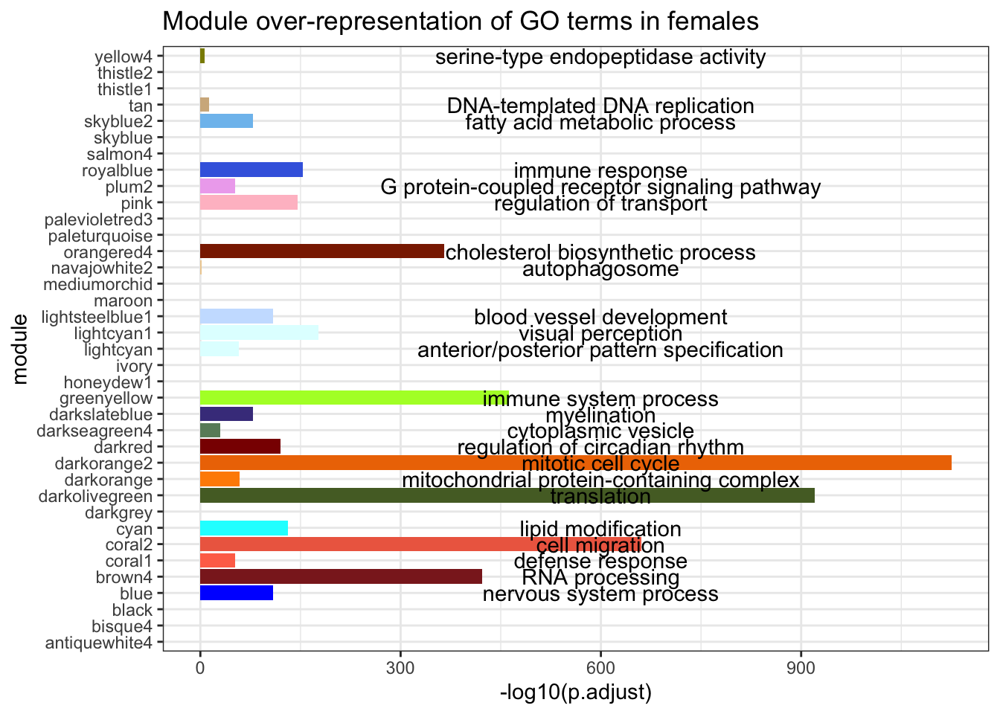
Out of the 29 modules detected in the female modules, 6 do not have any GO terms significantly over-represented.
tibble(module = unique(mergedColors.signed.males)) %>%
left_join(merged.modules.signed.enrichment.tables$males %>% bind_rows()) %>%
ggplot(aes(y = module, x = -log10(p.adjust))) +
geom_col(
aes(fill = module),
) +
geom_text(aes(label = Description),
x = 600,
fill = NA,
data = . %>%
dplyr::distinct(module, .keep_all = TRUE) ) +
scale_fill_identity() +
theme_bw() +
ggtitle("Module over-representation of GO terms in males")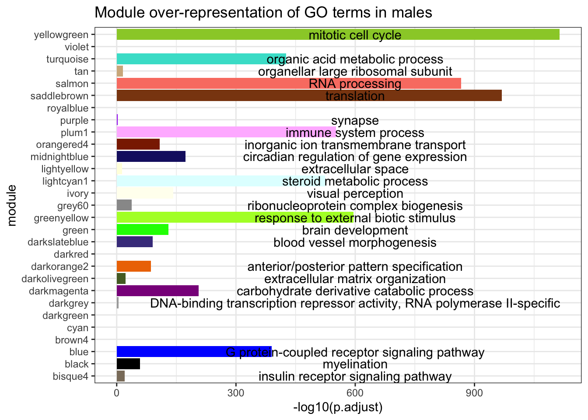
Relate modules to fish metadata
I now want to see which modules are related to the fish metadata (i.e. for now, genotype and treatment). For this, I will correlate the merged module eigengenes with the traits of interest using Spearman corelation.
# Define numbers of genes and samples
nGenes <- nrow(logCPM.male.filtered)
nSamples.males <- ncol(logCPM.male.filtered)
nSamples.females <- ncol(logCPM.female.filtered)
# correlate the module eigengenes with the design matrix
moduleTraitCor.signed.males <-
cor(merge.signed.males$newMEs, traits.males, use = "p", method = "spearman")
moduleTraitCor.signed.females <-
cor(merge.signed.females$newMEs, traits.females, use = "p", method = "spearman")
# calculate the pvals
moduleTraitPValue.signed.males <-
corPvalueStudent(moduleTraitCor.signed.males, nSamples.males) %>%
as.data.frame() %>%
mutate(module = rownames(.))
moduleTraitPValue.signed.females <-
corPvalueStudent(moduleTraitCor.signed.females, nSamples.females) %>%
as.data.frame() %>%
mutate(module = rownames(.))
# define some interesting modules for plotting.
interesting.modules.males <-
moduleTraitPValue.signed.males %>%
dplyr::filter_all(any_vars(. < 0.05)) %>%
rownames()
interesting.modules.females <-
moduleTraitPValue.signed.females %>%
dplyr::filter_all(any_vars(. < 0.05)) %>%
rownames()Females
In females,some modules are highly correlated with genotype, and less correlated in genotype x treatment, suggesting a rescue.
# plot a heatmap showing the correlations
moduleTraitCor.signed.females %>%
.[interesting.modules.females,] %>%
as.data.frame() %>%
dplyr::select(-1) %>%
t %>%
pheatmap(
color = colorRampPalette(rev(brewer.pal(n = 7,
name = "RdBu")))(100),
border_color = "white",
angle_col = 315,
treeheight_row = 0,
treeheight_col = 0,
clustering_distance_cols = "correlation",
cluster_rows = FALSE,
number_color = "black",
cellwidth = 25, cellheight = 25,
fontsize = 9,
main = "Module - trait relationships - Females",
display_numbers = moduleTraitPValue.signed.females %>%
.[interesting.modules.females,] %>%
dplyr::select(-1, -module) %>%
t %>%
signif(1)
)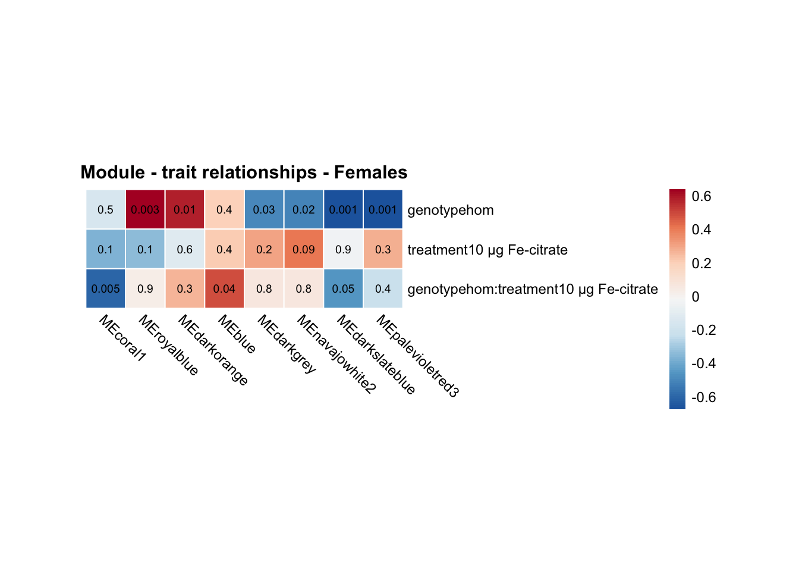
plot the module eigengenes
The eigengenes which show a significant correlation in at least one
of the coefs are plotted below by genotype and treatent. The
blue, darkgrey and royalblue
modules look interesting may be at least trending towards
therapeutic.
# a function for plotting MEs
merge.signed.females$newMEs %>%
as.data.frame() %>%
rownames_to_column("fish_id") %>%
dplyr::select(fish_id, interesting.modules.females) %>%
as_tibble %>%
left_join(x.females$samples) %>%
pivot_longer(names_to = "module", values_to = "ME_value", starts_with("ME")) %>%
ggplot(aes(x = treatment, y = ME_value, colour = genotype)) +
geom_boxplot() +
facet_wrap(~module, nrow = 2)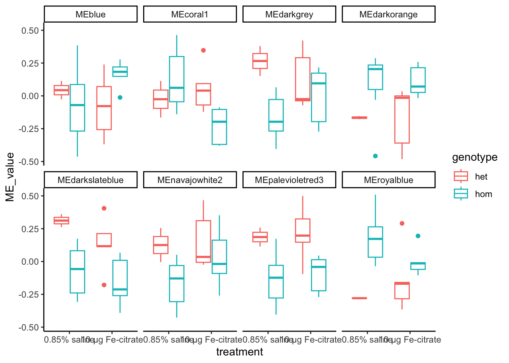
royalblue module
Plotting out the module eigengenes across the genotypes and treatments shows a subtle reduction in the average expression of these genes after iron treatment in the MPS IIIB fish. This module was found to be over-represented in GO terms involving the immune system.
ggarrange(
merge.signed.females$newMEs %>%
as.data.frame() %>%
rownames_to_column("fish_id") %>%
dplyr::select(fish_id, MEroyalblue) %>%
as_tibble %>%
left_join(x.females$samples) %>%
pivot_longer(names_to = "module", values_to = "ME_value", starts_with("ME")) %>%
ggplot(aes(x = treatment, y = ME_value, colour = genotype)) +
geom_boxplot() +
labs(
title = paste("p =",
moduleTraitPValue.signed.females["MEroyalblue",2] %>% signif(2))),
dotplot(merged.moduls.female.signed.enrichment.res$royalblue) +
ggtitle("Enriched GO terms in royalblue module")
)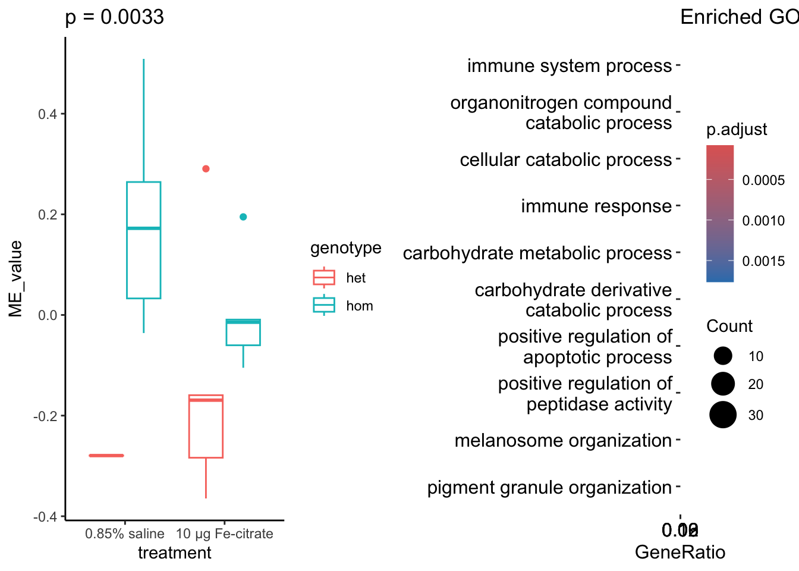
Gene significance and module membership
I now want to identify genes with high gene significance and module membership.
# Obtain the top hub gene in each module
chooseTopHubInEachModule(logCPM.female.filtered %>% t(),
merge.signed.females$colors,
type = "signed",
power = softpower.signed
) antiquewhite4 bisque4 black
"ENSDARG00000078149" "ENSDARG00000028228" "ENSDARG00000057867"
blue brown4 coral1
"ENSDARG00000076571" "ENSDARG00000059582" "ENSDARG00000089043"
coral2 cyan darkgrey
"ENSDARG00000061140" "ENSDARG00000002731" "ENSDARG00000094965"
darkolivegreen darkorange darkorange2
"ENSDARG00000036875" "ENSDARG00000040314" "ENSDARG00000011094"
darkred darkseagreen4 darkslateblue
"ENSDARG00000068374" "ENSDARG00000062462" "ENSDARG00000041998"
greenyellow honeydew1 ivory
"ENSDARG00000018553" "ENSDARG00000117275" "ENSDARG00000101807"
lightcyan lightcyan1 lightsteelblue1
"ENSDARG00000010630" "ENSDARG00000035798" "ENSDARG00000104110"
maroon mediumorchid navajowhite2
"ENSDARG00000017006" "ENSDARG00000010662" "ENSDARG00000055292"
orangered4 paleturquoise palevioletred3
"ENSDARG00000042641" "ENSDARG00000061368" "ENSDARG00000016396"
pink plum2 royalblue
"ENSDARG00000092799" "ENSDARG00000103980" "ENSDARG00000098114"
salmon4 skyblue skyblue2
"ENSDARG00000097492" "ENSDARG00000044625" "ENSDARG00000004094"
tan thistle1 thistle2
"ENSDARG00000051939" "ENSDARG00000068432" "ENSDARG00000100240"
yellow4
"ENSDARG00000042961" # # look at the TOM Matrix for the blue module
# TOM.signed.females[merge.signed.females$colors == "royalblue",merge.signed.females$colors == "royalblue"]
#logCPM.female.filtereddark grey module
The darkgrey module does not have any over-represented GO terms in it.
merge.signed.females$newMEs %>%
as.data.frame() %>%
rownames_to_column("fish_id") %>%
dplyr::select(fish_id, MEdarkgrey) %>%
as_tibble %>%
left_join(x.females$samples) %>%
pivot_longer(names_to = "module", values_to = "ME_value", starts_with("ME")) %>%
ggplot(aes(x = treatment, y = ME_value, colour = genotype)) +
geom_boxplot()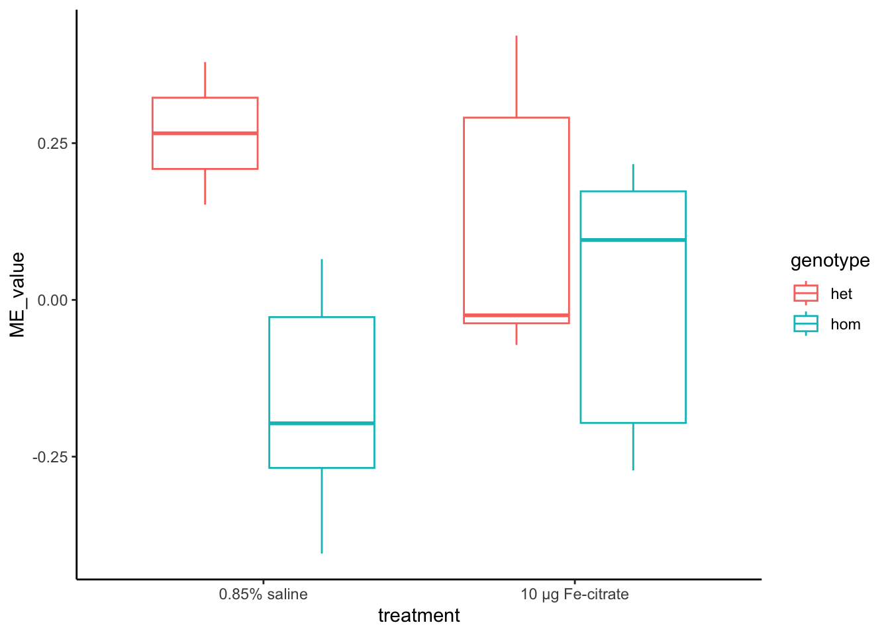
blue module
This module is enriched in synaptic genes, which appear to improve after iron treatment!!!
ggarrange(
merge.signed.females$newMEs %>%
as.data.frame() %>%
rownames_to_column("fish_id") %>%
dplyr::select(fish_id, MEblue) %>%
as_tibble %>%
left_join(x.females$samples) %>%
pivot_longer(names_to = "module", values_to = "ME_value", starts_with("ME")) %>%
ggplot(aes(x = treatment, y = ME_value, colour = genotype)) +
geom_boxplot() +
ggtitle("Blue module"),
dotplot(merged.moduls.female.signed.enrichment.res$blue)
)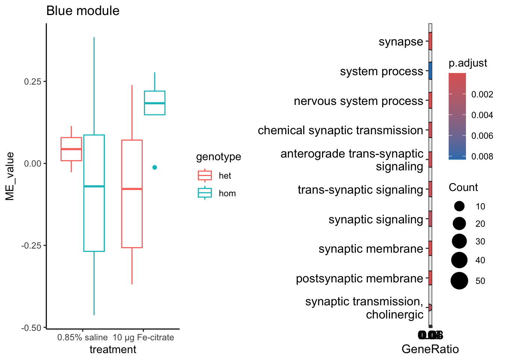
males
In males, there doesnt seem to be much changes in the correlation of genotype and treatment.
# plot a heatmap showing the correlations
moduleTraitCor.signed.males %>%
.[interesting.modules.males,] %>%
as.data.frame() %>%
dplyr::select(-1) %>%
t %>%
pheatmap(
color = colorRampPalette(rev(brewer.pal(n = 7,
name = "RdBu")))(100),
border_color = "white",
angle_col = 315,
treeheight_row = 0,
treeheight_col = 0,
clustering_distance_cols = "correlation",
cluster_rows = FALSE,
number_color = "black",
cellwidth = 25, cellheight = 25,
fontsize = 9,
main = "Module - trait relationships - Females",
display_numbers = moduleTraitPValue.signed.males %>%
.[interesting.modules.males,] %>%
dplyr::select(-1, -module) %>%
t %>%
signif(1)
)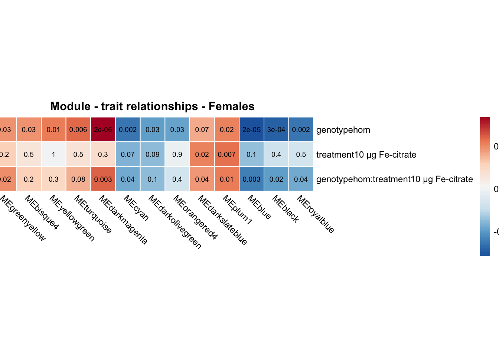
plot the module eigengenes
The eigengenes which show a significant correlation in at least one
of the coefs are plotted below by genotype and treatent. The
orangered4 and yellowgreen modules show some
suble trends towards rescue. But the plum1 and
cyan modules look more significantly perturbed.
# a function for plotting MEs
merge.signed.males$newMEs %>%
as.data.frame() %>%
rownames_to_column("fish_id") %>%
dplyr::select(fish_id, interesting.modules.males) %>%
as_tibble %>%
left_join(x.males$samples) %>%
pivot_longer(names_to = "module", values_to = "ME_value", starts_with("ME")) %>%
ggplot(aes(x = treatment, y = ME_value, colour = genotype)) +
geom_boxplot() +
facet_wrap(~module, nrow = 2)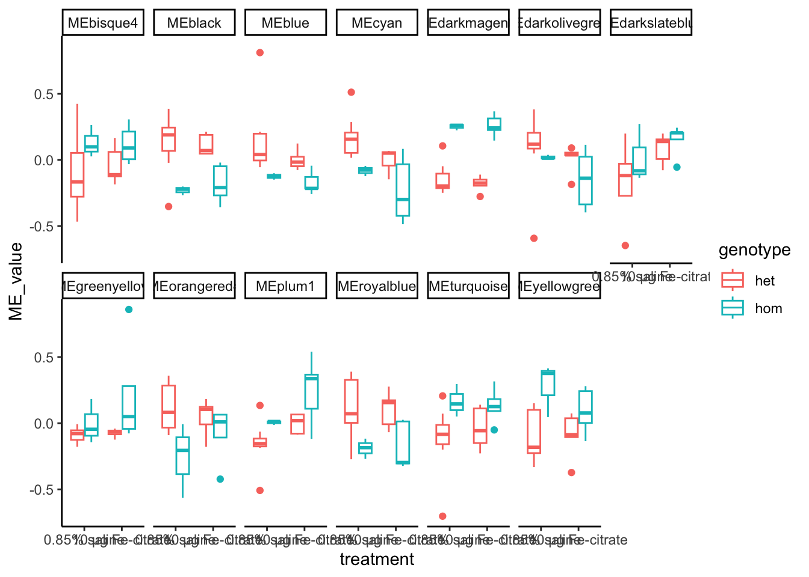
orangered4 module
ggarrange(
merge.signed.males$newMEs %>%
as.data.frame() %>%
rownames_to_column("fish_id") %>%
dplyr::select(fish_id, MEorangered4) %>%
as_tibble %>%
left_join(x.males$samples) %>%
pivot_longer(names_to = "module", values_to = "ME_value", starts_with("ME")) %>%
ggplot(aes(x = treatment, y = ME_value, colour = genotype)) +
geom_boxplot(),
barplot(merged.moduls.male.signed.enrichment.res$orangered4)
)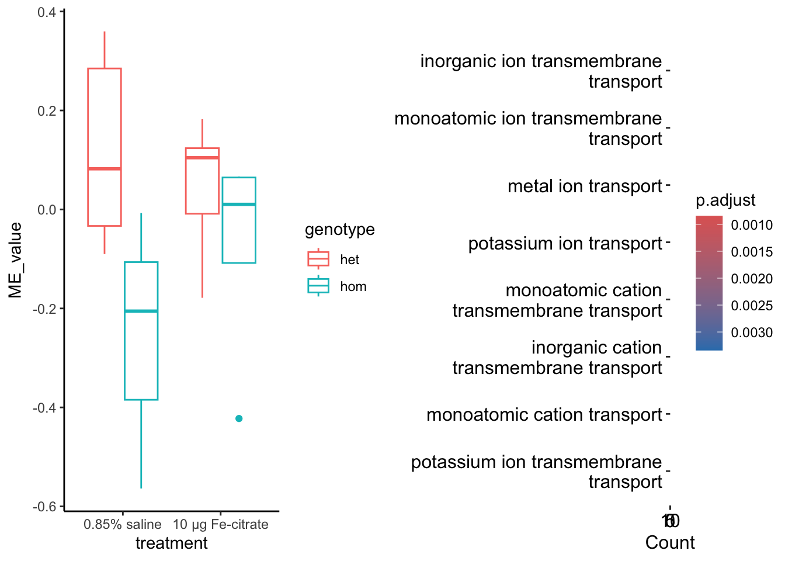
yellowgreen module
ggarrange(
merge.signed.males$newMEs %>%
as.data.frame() %>%
rownames_to_column("fish_id") %>%
dplyr::select(fish_id, MEyellowgreen) %>%
as_tibble %>%
left_join(x.males$samples) %>%
pivot_longer(names_to = "module", values_to = "ME_value", starts_with("ME")) %>%
ggplot(aes(x = treatment, y = ME_value, colour = genotype)) +
geom_boxplot(),
barplot(merged.moduls.male.signed.enrichment.res$yellowgreen)
)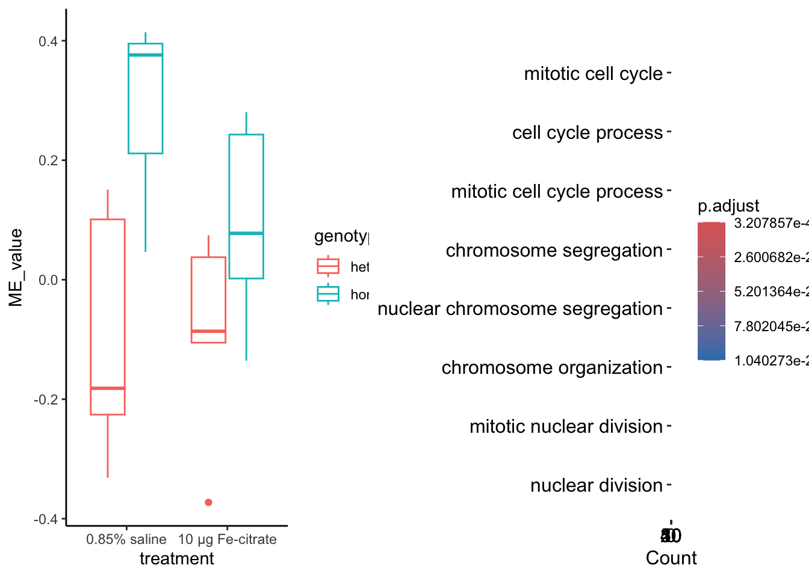
plum1 module
This supports that inflammation increased after iron supplementation in males.
ggarrange(
merge.signed.males$newMEs %>%
as.data.frame() %>%
rownames_to_column("fish_id") %>%
dplyr::select(fish_id, MEplum1) %>%
as_tibble %>%
left_join(x.males$samples) %>%
pivot_longer(names_to = "module", values_to = "ME_value", starts_with("ME")) %>%
ggplot(aes(x = treatment, y = ME_value, colour = genotype)) +
geom_boxplot(),
barplot(merged.moduls.male.signed.enrichment.res$plum1)
)
cyan module
No GO terms were over-represented in this module.
ggarrange(
merge.signed.males$newMEs %>%
as.data.frame() %>%
rownames_to_column("fish_id") %>%
dplyr::select(fish_id, MEcyan) %>%
as_tibble %>%
left_join(x.males$samples) %>%
pivot_longer(names_to = "module", values_to = "ME_value", starts_with("ME")) %>%
ggplot(aes(x = treatment, y = ME_value, colour = genotype)) +
geom_boxplot())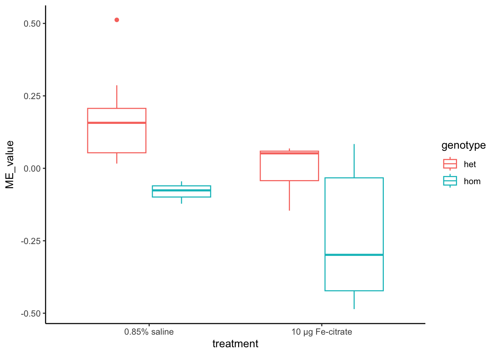
Module preservation between sexes
sessionInfo()R version 4.3.2 (2023-10-31)
Platform: aarch64-apple-darwin20 (64-bit)
Running under: macOS Sonoma 14.3
Matrix products: default
BLAS: /Library/Frameworks/R.framework/Versions/4.3-arm64/Resources/lib/libRblas.0.dylib
LAPACK: /Library/Frameworks/R.framework/Versions/4.3-arm64/Resources/lib/libRlapack.dylib; LAPACK version 3.11.0
locale:
[1] en_US.UTF-8/en_US.UTF-8/en_US.UTF-8/C/en_US.UTF-8/en_US.UTF-8
time zone: Australia/Adelaide
tzcode source: internal
attached base packages:
[1] stats4 stats graphics grDevices utils datasets methods
[8] base
other attached packages:
[1] edgeR_4.0.16 limma_3.58.1 matrixStats_1.2.0
[4] msigdbr_7.5.1 clusterProfiler_4.10.0 org.Dr.eg.db_3.18.0
[7] topGO_2.54.0 SparseM_1.81 GO.db_3.18.0
[10] AnnotationDbi_1.64.1 IRanges_2.36.0 S4Vectors_0.40.2
[13] Biobase_2.62.0 graph_1.80.0 BiocGenerics_0.48.1
[16] WGCNA_1.72-5 fastcluster_1.2.6 dynamicTreeCut_1.63-1
[19] igraph_2.0.2 colorspace_2.1-0 RColorBrewer_1.1-3
[22] ggforce_0.4.2 ggfortify_0.4.16 ggrepel_0.9.5
[25] ggpubr_0.6.0 pheatmap_1.0.12 scales_1.3.0
[28] UpSetR_1.4.0 kableExtra_1.4.0 pander_0.6.5
[31] readxl_1.4.3 magrittr_2.0.3 lubridate_1.9.3
[34] forcats_1.0.0 stringr_1.5.1 dplyr_1.1.4
[37] purrr_1.0.2 readr_2.1.5 tidyr_1.3.1
[40] tibble_3.2.1 ggplot2_3.5.0 tidyverse_2.0.0
loaded via a namespace (and not attached):
[1] fs_1.6.3 bitops_1.0-7
[3] enrichplot_1.22.0 HDO.db_0.99.1
[5] httr_1.4.7 doParallel_1.0.17
[7] tools_4.3.2 backports_1.4.1
[9] utf8_1.2.4 R6_2.5.1
[11] lazyeval_0.2.2 withr_3.0.0
[13] gridExtra_2.3 preprocessCore_1.64.0
[15] cli_3.6.2 scatterpie_0.2.1
[17] labeling_0.4.3 sass_0.4.8
[19] systemfonts_1.0.5 yulab.utils_0.1.4
[21] gson_0.1.0 foreign_0.8-86
[23] DOSE_3.28.2 svglite_2.1.3
[25] rstudioapi_0.15.0 impute_1.76.0
[27] RSQLite_2.3.5 generics_0.1.3
[29] gridGraphics_0.5-1 car_3.1-2
[31] Matrix_1.6-5 fansi_1.0.6
[33] abind_1.4-5 lifecycle_1.0.4
[35] yaml_2.3.8 carData_3.0-5
[37] qvalue_2.34.0 BiocFileCache_2.10.1
[39] grid_4.3.2 blob_1.2.4
[41] promises_1.2.1 crayon_1.5.2
[43] lattice_0.22-5 cowplot_1.1.3
[45] KEGGREST_1.42.0 pillar_1.9.0
[47] knitr_1.45 fgsea_1.28.0
[49] codetools_0.2-19 fastmatch_1.1-4
[51] glue_1.7.0 ggfun_0.1.4
[53] data.table_1.15.0 vctrs_0.6.5
[55] png_0.1-8 treeio_1.26.0
[57] cellranger_1.1.0 gtable_0.3.4
[59] cachem_1.0.8 xfun_0.42
[61] mime_0.12 tidygraph_1.3.1
[63] survival_3.5-8 iterators_1.0.14
[65] statmod_1.5.0 interactiveDisplayBase_1.40.0
[67] ellipsis_0.3.2 nlme_3.1-164
[69] ggtree_3.10.1 bit64_4.0.5
[71] filelock_1.0.3 GenomeInfoDb_1.38.6
[73] rprojroot_2.0.4 bslib_0.6.1
[75] rpart_4.1.23 DBI_1.2.2
[77] Hmisc_5.1-1 nnet_7.3-19
[79] tidyselect_1.2.0 bit_4.0.5
[81] compiler_4.3.2 curl_5.2.0
[83] git2r_0.33.0 htmlTable_2.4.2
[85] xml2_1.3.6 shadowtext_0.1.3
[87] checkmate_2.3.1 rappdirs_0.3.3
[89] digest_0.6.34 rmarkdown_2.25
[91] XVector_0.42.0 htmltools_0.5.7
[93] pkgconfig_2.0.3 base64enc_0.1-3
[95] highr_0.10 dbplyr_2.4.0
[97] fastmap_1.1.1 rlang_1.1.3
[99] htmlwidgets_1.6.4 shiny_1.8.0
[101] farver_2.1.1 jquerylib_0.1.4
[103] jsonlite_1.8.8 BiocParallel_1.36.0
[105] GOSemSim_2.28.1 RCurl_1.98-1.14
[107] Formula_1.2-5 GenomeInfoDbData_1.2.11
[109] ggplotify_0.1.2 patchwork_1.2.0
[111] munsell_0.5.0 Rcpp_1.0.12
[113] ape_5.7-1 babelgene_22.9
[115] viridis_0.6.5 stringi_1.8.3
[117] ggraph_2.2.0 zlibbioc_1.48.0
[119] MASS_7.3-60.0.1 AnnotationHub_3.10.0
[121] plyr_1.8.9 parallel_4.3.2
[123] Biostrings_2.70.2 graphlayouts_1.1.0
[125] splines_4.3.2 hms_1.1.3
[127] locfit_1.5-9.8 ggsignif_0.6.4
[129] reshape2_1.4.4 BiocVersion_3.18.1
[131] evaluate_0.23 BiocManager_1.30.22
[133] tzdb_0.4.0 foreach_1.5.2
[135] tweenr_2.0.2 httpuv_1.6.14
[137] polyclip_1.10-6 broom_1.0.5
[139] xtable_1.8-4 tidytree_0.4.6
[141] rstatix_0.7.2 later_1.3.2
[143] viridisLite_0.4.2 aplot_0.2.2
[145] memoise_2.0.1 cluster_2.1.6
[147] workflowr_1.7.1 timechange_0.3.0